건축산업기사 (2005-05-29 기출문제)
1과목: 건축계획
1. 사무소 건축에서 2중지역 배치(double zone layout)를 설명한 내용 중 틀린 것은?
- 중규모 크기의 사무소 건물에 적당하다.
- 경제성보다 건강, 분위기 등이 더 중요하게 요구되는 건물에 적당하다.
- 주계단과 부계단에서 각 실로 들어갈 수 있다.
- 동서로 노출되도록 방향을 정하는 것이 바람직하다.
(정답률: 알수없음)

2. 다음 중 초등학교 저학년에 대해 가장 권장할 만한 학교운영방식은?
- 종합교실형(U형)
- 일반교실, 특별교실형(U+V형)
- 교과교실형(V형)
- 플라톤형(P형)
(정답률: 55%)
3. 부엌크기의 결정기준과 가장 관계가 먼 것은?
- 주작업인의 동작범위
- 설비기구의 규모
- 부엌공간의 주출입구
- 주택의 연면적, 가족수, 평균작업인의 수
(정답률: 59%)
4. 주택의 동선계획(動線計劃)에 관한 설명 중 틀린 것은?
- 동선(動線)의 형(型)은 될 수 있는 한 단순하게 한다.
- 동선에는 공간이 필요하고 가구를 둘 수 없다.
- 다른 종류의 동선과는 될 수 있는 한 근접교차시켜 힘이 들지 않게 한다.
- 동선의 길이는 될 수 있는 한 짧게 해야 한다.
(정답률: 78%)
5. 연속작업식 레이아웃(layout)이라고도 하며, 대량생산에 유리하고 생산성이 높은 공장건축의 레이아웃 형식은?
- 제품중심의 레이아웃
- 공정중심의 레이아웃
- 고정식 레이아웃
- 혼성식 레이아웃
(정답률: 65%)
6. 주거단지의 단위 중 작은 것부터 큰 순서로 올바르게 나열된 것은?
- 근린분구 - 근린주구 - 인보구
- 근린주구 - 인보구 - 근린분구
- 인보구 - 근린분구 - 근린주구
- 근린주구 - 근린분구 - 인보구
(정답률: 50%)
7. 아파트의 평면형식 중 계단실형(Hall Type)에 대한 설명으로 옳지 않은 것은?
- 좁은 대지에서 집약형 주거 등이 가능하다.
- 동선이 짧아 출입이 용이하다.
- 코어의 이용률이 높아 경제적으로 유리하다.
- 전용면적비가 높아질 수 있다.
(정답률: 10%)
8. 사무소 건축의 코어내 각 공간의 위치관계에 대한 설명으로 부적당한 것은?
- 계단과 엘리베이터 및 화장실은 가능한 한 근접되도록 한다.
- 코어 내의 공간과 임대사무실 사이의 동선이 간단하게 되도록 한다.
- 엘리베이터는 가급적 중앙에 집중되도록 한다.
- 잡용실과 급탕실은 가급적 분리되도록 한다.
(정답률: 54%)
9. 교사의 배치 방법 중 분산병렬형에 관한 설명으로 옳지 않은 것은?
- 넓은 부지를 필요로 하지 않는다.
- 구조계획이 간단하다.
- 놀이터와 정원이 생긴다.
- 교실의 환경조건이 균등해진다.
(정답률: 46%)
10. 1,000명을 수용하는 사무소 건축의 연면적으로 가장 적당한 것은?
- 3,000m2
- 5,000m2
- 10,000m2
- 15,000m2
(정답률: 67%)
11. 상점 계획에 관한 설명 중 옳지 않은 것은?
- 상점내 고객의 동선은 짧게, 종업원의 동선은 길게 계획한다.
- 국부조명은 배열을 바꾸는 경우를 고려하여 자유롭게 수량, 방향, 위치를 변경할 수 있도록 한다.
- 고객의 동선과 종업원의 동선이 만나는 곳에 카운터 케이스를 놓는다.
- 상점의 총 면적이란 일반적으로 건축면적 가운데 영업을 목적으로 사용되는 면적을 말한다.
(정답률: 60%)
12. 상점 건축계획에서 업종에 대한 방위설정으로 가장 부적당한 것은?
- 부인용품점 - 오후에 그늘이 지지 않는 방향으로 하는 것이 좋다.
- 음식점 - 음식물이 부패하기 쉬우므로 도로의 남측에 위치하는 것은 좋지 않다.
- 양복점, 가구점, 서점 - 일사에 의한 퇴색, 변색, 파손에 유의하여 도로의 남측에 설치하는 것이 바람직하다.
- 여름용품점 - 도로의 북측을 택하고 남측 광선을 취한다.
(정답률: 28%)
13. 공장건축 중 무창공장에 대한 설명으로 옳지 않은 것은?
- 온·습도의 조절이 유창공장에 비해 어렵다.
- 방적공장 등에서 무창공장형식이 사용된다.
- 공장내 조도가 일정해진다.
- 외부로부터 자극이 적으나 오히려 실내발생 소음은 커진다.
(정답률: 62%)
14. 백화점의 에스컬레이터 배치형식에 대한 설명 중 옳은 것은?
- 직렬식 배치 - 점유면적이 작고 승객시야가 좋다.
- 병렬식 배치 - 백화점 점내를 내려다 보기가 어렵다.
- 교차식 배치 - 점유면적이 작다.
- 병렬 연속식 배치 - 점유면적이 가장 작다.
(정답률: 알수없음)
15. 유치원 교사의 평면형 중 불필요한 공간 없이 기능적이고 활동적이지만 정적인 분위기가 결여되어 있는 형식은?
- 일자형
- L자형
- 중정형
- 십자형
(정답률: 0%)
16. 백화점 평면계획에 있어서 엘리베이터와 에스컬레이터의 위치는 어느 곳이 가장 좋은가?
- 두 가지 모두 고객 출입구 근처에 있어야 좋다.
- 엘리베이터는 주 출입구에서 가장 가까운 곳에, 에스컬레이터는 먼 곳이 좋다.
- 엘리베이터는 주 출입구에서 먼 곳에, 에스컬레이터는 그 중간이 좋다.
- 두 가지 모두 주 출입구에서 가장 깊숙한 곳이 좋다.
(정답률: 알수없음)
17. 사무소 건축의 코어 시스템(Core system)의 특징에 대한 설명으로 옳지 않은 것은?
- 코어(Core)의 외곽이 내력적 구조체 역할을 한다.
- 각 층에서의 설비상의 계통거리가 길게 된다.
- 사무소의 유효면적율을 높인다.
- 서비스 부분의 위치가 각 층마다 공통의 위치에 있도록 한다.
(정답률: 알수없음)
18. 사무소 건축계획에서 층고를 낮게 잡는 이유와 가장 관계가 먼 것은?
- 엘리베이터의 왕복시간을 단축하기 위하여
- 많은 층수를 얻기 위하여
- 건축 공사비를 싸게하기 위하여
- 에너지 절약을 하기 위하여
(정답률: 31%)
19. 슈퍼마켓(Super-market) 건축계획에 관한 기술 중 가장 올바른 것은?
- 매장바닥은 단차를 두면 단조로운 대공간에 변화감을 주어 효과적이다.
- 입구와 출구의 폭은 같게 하고 가급적 분리시키는 것이 좋다.
- 체크 카운터의 대수는 1시간당 1대의 처리능력을 슈퍼마켓의 경우 100 ‾ 200명으로 보고 결정한다.
- 고객동선은 일방통행이 좋고 통로폭은 1.5m 이상이 바람직하다.
(정답률: 알수없음)
20. 아파트의 블록플랜(Block plan) 결정조건으로 옳지 않은 것은?
- 각 단위평면이 3면 이상 외기에 접할 것
- 각 단위평면의 중요한 실이 균등한 조건을 가질 것
- 단위주거가 균등하게 일사면에 노출되도록 할 것
- 현관은 계단으로부터 멀지 않을 것
(정답률: 27%)
2과목: 건축시공
21. 철근콘크리트 보로서 폭 40cm, 춤 60cm, 길이 6m짜리 10개의 중량은 얼마인가?
- 34,560 kg
- 33,120 kg
- 28,800 kg
- 21,600 kg
(정답률: 28%)
22. 미장재료 중 수경성 재료인 것은?
- 진흙
- 회반죽
- 시멘트 모르타르
- 돌로마이트 플라스터
(정답률: 42%)
23. 다음 중 직접가설비 항목에 속하지 않는 것은?
- 규준틀 설치
- 양수 및 배수설비
- 비계공사
- 건축물 현장정리
(정답률: 31%)
24. 아스팔트의 양부를 판정하는데 적당한 것은?
- 시공연도
- 마모도
- 침입도
- 강도
(정답률: 47%)
25. 웰포인트공법에 관한 내용으로 옳지 않은 것은?
- 출수가 많고 깊은 터파기에 있어서의 지하수 배수공법의 일종이다.
- 지내력이 증가한다.
- 수분이 많은 점토질 지반에 적당한 공법이다.
- 지하수위를 낮춘다.
(정답률: 알수없음)
26. 크롬산 아연을 안료로 하고, 알키드 수지를 전색료로 한 것으로서 알루미늄 녹막이 초벌칠에 적당한 도료는?
- 광명단
- 징크로메이트(Zincromate)
- 그라파이트(Graphite)
- 파커라이징(Parkerizing)
(정답률: 59%)
27. 지반의 지내력도(t/m2) 값이 큰 것부터의 순서로 옳은 것은?
- 연암반 - 자갈 - 모래 - 점토 - 진흙
- 연암반 - 자갈 - 점토 - 모래 - 진흙
- 연암반 - 자갈 - 점토 - 진흙 - 모래
- 자갈 - 연암반 - 모래 - 점토 - 진흙
(정답률: 55%)
28. 철근콘크리트공사에서 워커빌리티의 측정방법으로 옳지 않은 것은?
- VB시험
- 드롭테이블시험
- 관입시험
- 강도시험
(정답률: 8%)
29. 무량판구조 또는 평판구조에서 특수상자모양의 기성재 거푸집을 무엇이라 하는가?
- 클라이밍폼
- 터널폼
- 와플폼
- 트래블링폼
(정답률: 25%)
30. 시멘트 품질을 확인하기 위한 시험방법으로 가장 거리가 먼 것은?
- 비중시험
- 분말도시험
- 안정성시험
- 입도시험
(정답률: 10%)
31. 콘크리트 부어넣기에 관한 설명으로서 부적당한 것은?
- 기둥에 붙은 벽의 콘크리트는 기둥을 가로질러 콘크리트를 횡류(橫流)시켜 부어넣는 것은 좋지 않다.
- 가급적 낮은 위치로부터 수직으로 부어넣는 것이 좋다.
- 퍼 부어넣는 위치에서 먼곳부터 부어 넣는다.
- 바닥은 가까운 곳에서부터 먼쪽으로 순서있게 부어 넣는다.
(정답률: 28%)
32. 다음 중 시공계획에 속하지 않는 것은?
- 공정계획
- 가설물의 계획
- 재해방지계획
- 노임지불계획
(정답률: 64%)
33. 콘크리트의 배합설계에 있어 물시멘트비를 결정하는 경우에 있어서 관계가 가장 적은 것은?
- 소요강도
- 내구성
- 수밀성
- 내마모성
(정답률: 37%)
34. 공동도급에 대한 설명으로 옳지 않은 것은?
- 기술자본 및 위험부담을 분산 감소한다.
- 공사 도급의 경쟁을 완화한다.
- 공사이윤은 각 회사의 출자 비율로 배당한다.
- 한 회사가 일괄 도급하는 것보다 경비가 감소한다.
(정답률: 55%)
35. 테라조 바르기의 줄눈 나누기의 크기로 적당한 것은?
- 면적 : 0.9m2 이내, 최대 줄눈 간격 : 1.2m 이하
- 면적 : 1.0m2 이내, 최대 줄눈 간격 : 1.2m 이하
- 면적 : 1.2m2 이내, 최대 줄눈 간격 : 2.0m 이하
- 면적 : 1.5m2 이내, 최대 줄눈 간격 : 2.0m 이하
(정답률: 알수없음)
36. 시멘트 액체 방수와 비교한 아스팔트방수의 특징에 관한 설명중 옳지 않은 것은?
- 시공시일이 길게 걸린다.
- 결함부 발견이 용이하다.
- 외기에 대한 영향이 적다.
- 공사비가 비싸다.
(정답률: 46%)
37. 다음 재료중 열가소성 수지에 속하지 않는 것은?
- 요소수지
- 염화비닐수지
- 폴리에틸렌수지
- 아크릴수지
(정답률: 8%)
38. 중장비 중에서 토공사용 장비가 아닌 것은?
- 불도우저(Bulldozer)
- 트럭크레인(Truck crane)
- 그레이더(Grader)
- 스크레이퍼(Scraper)
(정답률: 38%)
39. 고층 건축공사에서 커튼월의 성능시험과 가장 거리가 먼 것은?
- 수밀시험
- 내화시험
- 풍압시험
- 인장시험
(정답률: 43%)
40. 소운반거리는 직고 1m를 수평거리 몇 m의 비율로 보는 것이 옳은가?
- 3m
- 4m
- 5m
- 6m
(정답률: 16%)
3과목: 건축구조
41. 그림에서 반력 Rc가 0 이 되려면 B점의 집중하중 P는 몇 tf 인가?
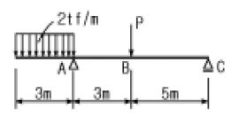
- 3tf
- 6tf
- 9tf
- 12tf
(정답률: 알수없음)
42. 단면 b x D = 40 x 60㎝인 대칭 T형보의 유효폭 B는? (단, x,y방향의 기둥간격은 4.8m, 슬래브 두께는 12㎝임)
- 100㎝
- 120㎝
- 150㎝
- 232㎝
(정답률: 알수없음)
43. 강도설계법으로 철근콘크리트보를 설계시 극한모멘트(Mu) 값은? (단, 단면 공칭모멘트 강도 Mn = 15 tfm ,ø=0.90 임)
- 16.7tfm
- 12.5tfm
- 13.0tfm
- 13.5tfm
(정답률: 10%)
44. 철골구조의 각부 사용개소와 관계되는 부재의 연결이 옳지 않은 것은?
- 인장재의 접합 - 턴 버클(turn buckle)
- 바닥판 - 덱크 플레이트(deck plate)
- 웨브의 보강 - 클립 앵글(clip angle)
- 주각부 - 사이드 앵글(side angle)
(정답률: 28%)
45. 연약지반에 대한 대책으로서 적절하지 못한 것은?
- 건물을 경량화한다.
- 건물의 중량분배를 고려한다.
- 이웃 건물과의 거리를 멀게 한다.
- 평면길이를 길게한다.
(정답률: 알수없음)
46. 그림과 같은 직사각형 단면의 X축에 대한 단면 2차 모멘트의 값은?
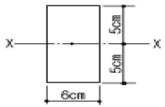
- 100cm4
- 125cm4
- 500cm4
- 1500cm4
(정답률: 알수없음)
47. 목구조의 2층 마루틀 중 복도 또는 간사이가 적을 때 보를 쓰지 않고 층도리와 간막이도리에 직접 장선을 걸쳐 대고 그 위에 마루널을 깐 것은?
- 동바리마루틀
- 홑마루틀
- 보마루틀
- 짠마루틀
(정답률: 46%)
48. 강도설계법에서 처짐을 계산하지 않아도 되는 보의 최소춤(depth) 규준으로 옳지 않은 것은? (보의 길이는 ℓ로 한다.)
- 단순지지: ℓ/16
- 1단연속: ℓ/18
- 양단연속: ℓ/21
- 캔틸레버: ℓ/8
(정답률: 27%)
49. 그림과 같은 단근 장방형보의 균열단면 2차모멘트는? (단, 탄성계수비= 15, 1-D19 단면적= 2.87㎝2, n=중립축)
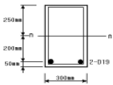
- 190,690 cm4
- 227,813 cm4
- 312,500 cm4
- 280,000 cm4
(정답률: 17%)
50. 조적벽 상부의 철근콘크리트 테두리보에 관한 설명 중 옳지 않은 것은?
- 내력벽을 일체로 하여 건물을 안정되게 한다.
- 지붕 하중을 균등하게 전달한다.
- 개구부 설치시 수직균열에 대한 보강역할을 한다.
- 춤은 벽두께의 1.5배 이상 또는 20cm 이상으로 한다.
(정답률: 30%)
51. 철근콘크리트조에서 주근이라 하기에 적당하지 않은 것은?
- 내민보의 축방향 상단근
- 압축력을 받는 부재의 압축방향 철근
- 양단고정보의 단부 상단 축방향 철근
- 1방향 바닥판의 장변방향 철근
(정답률: 24%)
52. 강도설계법에서 단근직사각형보의 설계모멘트 강도로 가장 적합한 것은?(단, b=350mm, d=600mm, 4-D22(1548mm2), fck=21MPa, fy=400MPa, ø=0.9 이며 철근비는 최소 및 최대철근비 범위내에 있음)
- 282kN·m
- 298.2kN·m
- 306.7kN·m
- 313.3kN·m
(정답률: 알수없음)
53. 강도 설계법에 의한 철근콘크리트보의 설계에서 fck=21MPa, fy=400MPa 일 때 최소철근비는?
- 0.0025
- 0.0030
- 0.0035
- 0.004
(정답률: 알수없음)
54. 그림과 같은 구조물의 휨모멘트도로 맞는 것은?
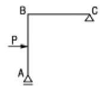
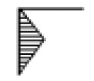
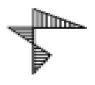
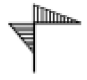
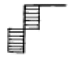
(정답률: 22%)
55. 강도설계법에서 다음과 같은 직사각형 복근보를 건물에 사용시 콘크리트가 부담하는 전단강도 øVc는? (단, fck=35MPa, fy=400MPa ,ø=0.85)
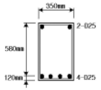
- 170kN
- 110kN
- 90kN
- 70kN
(정답률: 37%)
56. 나무구조의 가새에 관한 기술 중 옳지 않은 것은?
- 가새의 경사는 60° 에 가까울수록 유리하다.
- 주요건물에서는 한 방향 가새로만 하지 않고 × 자형으로 하여 인장ㆍ압축을 겸비하도록 한다.
- 목조 벽체를 수평력에 견디게 하고 안정한 구조로 하기위한 것이다.
- 가새와 샛기둥이 만나는 곳에는 샛기둥을 따내어 맞춘다.
(정답률: 25%)
57. 그림과 같은 왕대공 트러스에서 C점에 P가 작용할 때 응력이 생기지 않는 부재는 몇 개인가? (단, 트러스 자체의 무게는 무시함)
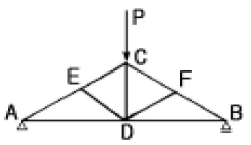
- 0
- 1개
- 2개
- 3개
(정답률: 14%)
58. 그림과 같은 L형 단면의 도심의 위치 y는?
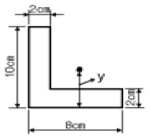
- 2.6㎝
- 3.5㎝
- 4.2㎝
- 5.8㎝
(정답률: 알수없음)
59. 다음 중 콘크리트구조설계시 사용하는 용어에 대한 설명이 옳지 않은 것은?
- 콘크리트 설계기준강도: 콘크리트 부재를 설계할 때 기준이 되는 콘크리트의 압축강도
- 공칭강도: 강도설계법의 규정과 가정에 따라 계산된 부재나 단면의 강도로 강도감소계수를 적용한 강도
- 계수하중: 강도설계법으로 부재를 설계할 때 사용하중에 하중계수를 곱한 하중
- 설계하중: 부재설계시 적용하는 하중
(정답률: 46%)
60. 지점 A의 반력의 크기와 방향이 옳은 것은?
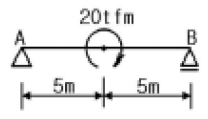
- 1.0tf (↑)
- 1.0tf (↓)
- 2.0tf (↑)
- 2.0tf (↓)
(정답률: 34%)
4과목: 건축설비
61. 복사난방에 관한 설명 중 옳지 않은 것은?
- 방열기를 설치하지 않아 실내바닥면의 이용도가 높다.
- 예열시간이 길어 일시적인 난방에는 바람직하지 않다.
- 실내 공기의 대류가 적기 때문에 바닥면의 진애의 상승이 없다.
- 실내 공기의 온도분포가 고르지 못하지만 증기난방방식에 비하여 설비비가 낮다.
(정답률: 43%)
62. 배수수평지관의 도피통기관의 관경은 그것을 접속하는 배수수평지관의 관경의 최소 얼마 이상이어야 하는가?
- 1/2
- 1
- 1/3
- 1/4
(정답률: 39%)
63. 스프링클러의 동시 기구수가 10개 일 때 스프링클러설비의 수원의 최소 필요 저수량은?
- 8m3
- 16m3
- 40m3
- 32m3
(정답률: 55%)
64. 다음 그림의 조명방식은? (단, 광원에서의 발산 광속 중 65%는 상향, 35%는 하향)
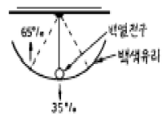
- 직접조명
- 간접조명
- 반직접조명
- 반간접조명
(정답률: 50%)
65. 바닥이나 벽을 관통하는 배관의 경우 후일에 관을 교체 하거나 수리할 경우에 편리하도록 설치하는 것은?
- 슬리브
- 스팀헤더
- 인젝터
- 감압밸브
(정답률: 12%)
66. 다음 중 기구의 최저필요압력이 가장 작은 것은?
- 일반수전
- 세정밸브(일반대변기용)
- 가스순간탕비기
- 세정밸브(블로우아웃식 대변기)
(정답률: 39%)
67. 저압 옥내 간선으로부터 분기하여 전기 기기에 이르는 전기회로를 무엇이라고 하는가?
- 간선
- 케이블 래크
- 풀박스
- 분기회로
(정답률: 40%)
68. 통기수직관을 설치한 배수ㆍ통기계통에 이용되며, 2개 이상의 기구트랩에 공통으로 하나의 통기관을 설치하는 통기 방식은?
- 각개통기방식
- 루프통기방식
- 신정통기방식
- 습통기방식
(정답률: 59%)
69. 증기난방을 하려고 할때 실의 손실열량(난방부하)이 27,300kcal/h일 경우 상당방열면적은?
- 32m2
- 42m2
- 52m2
- 62m2
(정답률: 19%)
70. 난방에 있어서 배관 신축이음 종류가 아닌 것은?
- 슬리브형 신축이음
- 루프형 신축이음
- 벨로우즈형 신축이음
- 스프링형 신축이음
(정답률: 알수없음)
71. 조명 설비에 대한 설명 중 옳지 않은 것은?
- 백열전등은 형광등보다 공사비가 적게 들며 설치가 간단하다.
- 좋은 조명은 주광색에 가까워야 하며, 연색성이 양호 하여야 한다.
- 직접 조명은 건축화 조명보다 그림자가 부드러운 편이다.
- 전반확산조명은 상향과 하향의 출광비율이 거의 비슷하다.
(정답률: 알수없음)
72. 온수난방배관 등의 공조배관에서 리버스 리턴(Reverse Return)을 채용하는 주된 이유는?
- 온수의 유량분배를 균등하게 하기 위해서
- 배관길이를 짧게 하여 열손실을 최소화 하기 위해서
- 배관의 신축, 팽창의 흡수를 용이하게 하기 위해서
- 배관내 공기배출을 용이하게 하기 위하여
(정답률: 34%)
73. 피뢰 설비에 관한 설명 중 틀린 것은?
- 피뢰 설비는 크게 돌침부, 피뢰도선, 접지극으로 구성된다.
- 인하도선의 간격은 60m이하로 하고, 도선이 알루미늄일 경우 단면적은 30mm2 이상으로 한다.
- 피뢰설비의 보호각은 일반건축물에서 60°, 위험물 저장 및 처리시설에서는 45°이다.
- 접지극은 뇌격 전류를 대지에 방류하기 위하여 지중에 매설한 도체이며, 주로 구리판이나 구리봉이 많이 사용된다.
(정답률: 50%)
74. 옥내소화전설비에 대한 설명으로 옳지 않은 것은?
- 지하가 중 터널로서 길이가 1,000m 이상인 터널에는 옥내소화전을 설치하여야 한다.
- 방수구는 소방대방물의 층마다 설치하되, 당해 소방대상물의 각 부분으로부터 하나의 옥내소화전방수구까지의 수평거리가 25m 이하가 되도록 한다.
- 펌프의 토출량은 옥내소화전이 가장 많이 설치된 층의 설치개수에 100ℓ /min을 곱한 양 이상이 되도록 한다.
- 송수구는 지면으로부터 높이 0.5m 이상 1m 이하의 위치에 설치한다.
(정답률: 36%)
75. 다음의 온수난방에 대한 설명 중 옳은 것은?
- 보일러와 팽창탱크를 연결하는 팽창관에는 밸브를 설치하여야 한다.
- 단관식 중력순환방식(하향공급식)에서 온수공급주관은 올림구배로 한다.
- 밀폐식 팽창탱크는 100℃ 이하의 저온수 난방에 이용되며 고온수 난방에서는 사용할 수 없다.
- 복관식 강제순환방식(상향공급식)에서 온수공급주관은 올림구배로 하고, 온수반환주관은 내림구배로 한다.
(정답률: 10%)
76. 다음 중 옥내배선의 모든 공사에 채용될 수 있는 방법으로 주로 철근콘크리트조의 매입 공사로서 많이 행해지고 있는 것은?
- 금속관공사
- 금속몰드공사
- 플로어덕트공사
- 버스덕트공사
(정답률: 44%)
77. 지름이 다른 주철관을 직선으로 연결하기 위해서 사용되는 것은?
- 캡(cap)
- 티(T)
- 엘보(elbow)
- 이경소켓(reducer)
(정답률: 20%)
78. 펌프로 옥상탱크에 24m3/hr의 물을 양수하고자 할 때 펌프의 필요한 축동력으로 적당한 것은?(단, 펌프의 흡입양정은 2m, 토출양정은 29m, 펌프의 효율은 55%, 배관의 전마찰손실은 펌프실양정(實揚程)의 35%로 가정한다.)
- 1.4㎾
- 5.0㎾
- 9.4㎾
- 12.5㎾
(정답률: 24%)
79. 열관류율의 단위는?
- kcal/mㆍhㆍ℃
- kcal/m2ㆍhㆍ℃
- kcal/kgㆍ℃
- mㆍhㆍ℃/kcal
(정답률: 7%)
80. 트랩의 종류와 그 용도의 연결이 옳지 않은 것은?
- 드럼 트랩 - 싱크대
- 열동 트랩 - 방열기
- 그리스 트랩 - 자동차 공장
- 플라스터 트랩 - 정형외과
(정답률: 34%)
5과목: 건축관계법규
81. 농·어업을 영위하기 위하여 건축하는 것으로 시장·군수·구청장에게 신고함으로써 건축허가를 받은 것으로 보는 건축물의 기준으로 옳지 않은 것은?
- 연면적의 합계가 100제곱미터 이하인 주택
- 연면적이 200제곱미터 이하인 창고
- 연면적이 400제곱미터 이하인 축사
- 연면적이 500제곱미터 이하인 작물재배사
(정답률: 0%)
82. 건축물을 철거할 때에는 몇 일 전에 신고하여야 하는가?(관련 규정 개정전 문제로 여기서는 기존 정답인 4번을 누르면 정답 처리됩니다. 자세한 내용은 해설을 참고하세요.)
- 철거하는 날
- 철거예정일 3일전
- 철거예정일 5일전
- 철거예정일 7일전
(정답률: 알수없음)
83. 건설교통부령이 정하는 건축물에 급수·배수·난방 및 환기의 건축설비를 설치하는 경우에는 건설교통부령이 정하는 바에 의하여 국가기술자격법에 의한 건축기계설비기술사 또는 공조냉동기계기술사의 협력을 받아야 한다. 그 기준으로 적합한 것은?
- 연면적이 5,000m2 이상인 건축물 또는 에너지를 대량으로 소비하는 건축물
- 연면적이 10,000m2 이상인 건축물 또는 에너지를 대량으로 소비하는 건축물
- 연면적이 15,000m2 이상인 건축물 또는 에너지를 대량으로 소비하는 건축물
- 연면적이 20,000m2 이상인 건축물 또는 에너지를 대량으로 소비하는 건축물
(정답률: 50%)
84. 의료시설 중 병원인 경우 바닥면적의 기준으로 합계가 얼마 이상인 경우에 에너지절약계약서를 제출하여야 하는가?
- 1,000m2 이상
- 2,000m2 이상
- 3,000m2 이상
- 4,000m2 이상
(정답률: 0%)
85. 주차전용 건축물에서 주차이외의 용도가 자동차관련시설인 경우 당해 건축물의 연면적에 대한 주차장의 용도로 사용되는 부분의 비율이 몇 % 이상이어야 하는가?
- 70%
- 80%
- 90%
- 95%
(정답률: 34%)
86. 다음의 시설물 중 부설주차장을 가장 많이 설치하여야 하는 것은?
- 위락시설
- 판매 및 영업시설
- 제2종 근린생활시설
- 숙박시설
(정답률: 40%)
87. 대수선의 범위에 해당하지 않는 것은?
- 기둥을 2개 이상 해체하여 수선하는 것
- 방화벽을 해체하여 수선하는 것
- 내력벽의 벽면적을 30m2이상 해체하여 수선하는 것
- 미관지구안에서 건축물의 외부형태를 변경하는 것
(정답률: 0%)
88. 다음중 건축허가 신청에 필요한 기본설계도서에 포함되지 않는 것은?
- 건축계획서
- 시방서
- 평면도
- 배치도
(정답률: 알수없음)
89. 부설주차장의 설치기준에서 설치대수의 산정기준을 시설 면적으로 하지 않는 시설물은?
- 위락시설
- 업무시설(오피스텔 제외)
- 관람장
- 숙박시설
(정답률: 25%)
90. 노외주차장인 주차전용건축물의 건축기준으로 옳지 않은 것은?
- 건폐율 : 90/100 이하
- 용적률 : 1,600% 이하
- 대지면적의 최소한도 : 45m2 이상
- 높이제한 : 대지가 너비 12m 미만의 도로에 접하는 경우 건축물의 각 부분의 높이는 그 부분으로부터 대지에 접한 도로의 반대쪽 경계선까지의 수평거리의 3배 이하
(정답률: 15%)
91. 건축물의 1층을 다음 용도로 사용하는 필로티의 경우 바닥면적에 산입되는 것은?
- 공중의 통행에 전용되는 경우
- 차량의 주차에 전용되는 경우
- 휴게실로 사용하는 경우
- 공동주택의 경우
(정답률: 알수없음)
92. 낙뢰의 우려가 있는 건축물에 설치하는 피뢰설비의 구조에 관한 기준 중 부적합한 것은?
- 돌침은 건축물의 맨 윗부분으로부터 25㎝ 이상 돌출시켜 설치한다.
- 피뢰도체 및 피뢰도선은 가연성물질과는 20㎝ 이상, 전선·전화선 또는 가스관과는 1.5m 이상의 거리를 둔다.
- 돌침은 지름 12㎜ 이상인 알루미늄·철 또는 강봉 기타 이와 동등이상의 강도 및 성능을 갖춘 것으로서, 한국 산업규격에 적합한 것을 사용한다.
- 피뢰도체 및 피뢰도선은 그 단면적이 동의 경우 50㎜2이상, 알루미늄의 경우 30㎜2 이상인 것으로서, 한국산업규격에 적합한 것을 사용한다.
(정답률: 10%)
93. 위락시설 중 주점영업의 용도에 쓰이는 건축물의 관람석으로서 그 바닥면적이 200m2 이상인 것의 반자의 높이는 얼마 이상이어야 하는가?(단, 노대의 아랫부분의 높이가 아니며, 기계환기장치를 설치하지 않은 경우임)
- 2.1m 이상
- 2.7m 이상
- 3.3m 이상
- 4.0m 이상
(정답률: 알수없음)
94. 지하층의 구조 및 설비의 기준에 대한 설명으로 옳은 것은?
- 바닥면적이 30제곱미터 이상인 층에는 직통계단외에 피난층 또는 지상으로 통하는 비상탈출구 및 환기통을 설치할 것
- 지하층의 바닥면적이 200제곱미터 이상인 층에는 식수 공급을 위한 급수전을 1개소 이상 설치할 것
- 비상탈출구의 유효너비는 0.75 미터이상으로 하고, 유효높이는 1.8 미터 이상으로 할 것(주택 제외)
- 비상탈출구는 출입구로부터 3미터 이상 떨어진 곳에 설치할 것(주택 제외)
(정답률: 16%)
95. 교육연구 및 복지시설중 학교의 출입구로 사용되는 회전문은 계단으로부터 얼마이상 떨어져서 설치해야 되는가?
- 2m
- 4m
- 6m
- 8m
(정답률: 18%)
96. 도로면으로부터 높이 얼마 이하에 있는 경우에 출입구·창문 기타 이와 유사한 구조물은 개폐시에 건축선의 수직면을 넘는 구조로 하여서는 아니되는가?
- 3m
- 3.5m
- 4m
- 4.5m
(정답률: 44%)
97. 기계식주차장의 사용검사와 정기검사의 유효기간으로 옳은 것은?
- 사용검사와 정기검사 모두 2년
- 사용검사는 3년, 정기검사는 2년
- 사용검사는 2년, 정기검사는 3년
- 사용검사와 정기검사 모두 3년
(정답률: 32%)
98. 건축물의 임시사용승인의 기간은 원칙적으로 얼마인가?
- 6월
- 1년
- 2년
- 3년
(정답률: 알수없음)
99. 다음중 특별피난계단의 구조에 적합하지 않은 것은?
- 출입구의 유효너비는 0.9m 이상으로 할 것
- 계단실의 노대에 접하는 창문의 면적은 1m2 이하로 할 것
- 건축물의 내부에서 부속실로 통하는 출입구에는 을종 방화문을 설치할 것
- 계단실에는 예비전원에 의한 조명설비를 할 것
(정답률: 25%)
100. 출입구가 2개 있는 노외주차장에서 차로의 너비를 가장 크게 요하는 주차형식은?
- 45°대향주차
- 직각주차
- 교차주차
- 60°대향주차
(정답률: 알수없음)